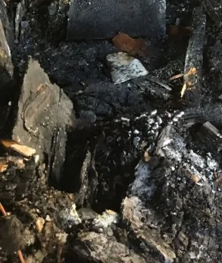

الحريق، حتى لو كان صغير، يهز البيت وأهله. والحمد لله على السلامة قبل كل شي. وبعد ما يهدأ الوضع، يجي سؤال: من وين نبدأ؟ والدخان والسخام ما يبقون في مكان الحريق بس، يمشون مع الهوا ويدخلون الغرف البعيدة والخزائن والمكيفات والأقمشة. وفي الرياض، مع التكييف المسكر أغلب السنة، الريحة تنتشر في البيت كله بسرعة. وهالدليل يعطيك ترتيب آمن وواضح لـتنظيف بعد الحريق بالرياض، لأن التنظيف المستعجل بالطريقة الغلط ممكن يزيد الضرر بدل ما يقلله.
محتويات المقال 44 قسم
- تنظيف بعد الحريق بالرياض: من وين تبدأ
- موقف يتكرر بعد حرائق المطابخ الصغيرة
- قبل أي تنظيف: السلامة أولًا
- معدات الحماية أثناء الشغل
- التوثيق: صور قبل أي إزالة
- أنواع الدخان والسخام باختصار
- تقسيم المكان حسب درجة الضرر
- ترتيب العمل العملي بعد الحريق
- إزالة آثار الدخان بالرياض: الجدران والأسقف والأسطح
- المفروشات والأقمشة
- جلسات المجالس والأقمشة الثقيلة
- الأثاث الخشبي الثقيل والخزائن المدمجة
- الإلكترونيات الشخصية
- الحيوانات الأليفة
- إزالة رائحة الحريق بالرياض: ليش المعطرات ما تكفي
- التهوية: كيف ومتى
- الحرائق الكهربائية والماس الكهربائي
- الغرف البعيدة عن الحريق
- الخزائن والمخازن المسكرة
- الأرضيات بعد الحريق
- الأبواب والنوافذ والإطارات
- الإضاءة والمراوح والأسقف المستعارة
- الحمامات بعد الحريق
- المكيفات وفتحات التهوية
- المطبخ بعد حريق المطبخ
- الأغراض الشخصية والأوراق والصور والكتب
- أثر ماء الإطفاء والرطوبة
- حماية الأجزاء السليمة أثناء الشغل
- المخلفات بعد الحريق
- المحلات والمنشآت بعد الحريق
- الواجهات والأسطح الخارجية
- حدود التنظيف: متى تحتاج مقاول أو معاينة هندسية
- بعد الترميم: تنظيف نهائي قبل الرجوع
- الرجوع للبيت والأطفال
- متابعة الريحة بعد أسابيع
- الأكل وأدوات المطبخ
- الحرائق الصغيرة جدًا
- العمائر والشقق المتجاورة
- قائمة متابعة بسيطة للأسرة
- أخطاء شائعة
- كم تستغرق عملية التنظيف بعد الحريق؟
- متى تحتاج الاستعانة بشركة متخصصة؟ وبماذا تسأل
- أسئلة شائعة عن التنظيف بعد الحريق
- الخاتمة
⚠️ تنبيه مهم: لا تدخل المكان المتضرر ولا تبدأ أي تنظيف إلا بعد ما تسمح الجهات المختصة، مثل الدفاع المدني والجهات الهندسية، بأن المبنى آمن إنشائيًا وكهربائيًا، وبعد فصل الكهرباء والغاز. هالمقال معلوماتي عن التنظيف فقط، وما هو إرشاد هندسي ولا طبي ولا تأميني. وأعمال الترميم الإنشائي وإصلاح الكهرباء والتمديدات من اختصاص مقاولين مرخصين.
تنظيف بعد الحريق بالرياض: من وين تبدأ
قبل ما تمسك فوطة، تتأكد إن المكان آمن، وبعدها توثق الأضرار، وبعدها تشيل المخلفات. والمسح والتنظيف الدقيق وإزالة الريحة تجي في الأخير. وهالترتيب مهم، لأن كل خطوة تعتمد على اللي قبلها.
وكثير من الناس يحسون إنهم لازم يبدأون فورًا عشان يرجعون لحياتهم. وهذا شعور مفهوم. لكن السخام والدخان يحتاجون طريقة معينة، والمسح بفوطة مبللة أو الفرك القوي ممكن ينشر السخام في السطح ويثبته فيه. وفي تنظيف بعد الحريق بالرياض، شوية صبر في البداية توفر كثير بعدين.
موقف يتكرر بعد حرائق المطابخ الصغيرة
تخيّل أسرة في حي من أحياء الرياض، صار عندهم حريق صغير في المطبخ من قدر زيت نسوه على النار. الحمد لله، الأب طفاه بسرعة، والدفاع المدني جا وتأكد إن الوضع تحت السيطرة، وما أحد تأذى.
في الليلة نفسها، فتحوا الشبابيك ورشوا معطر وناموا عند أهلهم. ولما رجعوا بعد يومين، تفاجأوا: ريحة الدخان في كل الغرف، حتى غرف النوم في الدور الثاني. والستائر في الصالة صار لونها رمادي، وعلى الجدار فوق المطبخ والممر خطوط سوداء. والأم حاولت تمسح الجدار بفوطة مبللة، فصار السخام يتمدد بدل ما يطلع. وجلسوا يتساءلون: من وين نبدأ؟ وهل نغسل الستائر ولا نرميها؟ وهل المكيف يحتاج شي؟ والأطفال كانوا يسألون كل يوم متى يرجعون لغرفهم، والأهل ما عندهم جواب واضح، لأنهم ما يعرفون كم ياخذ الشغل ولا من وين يبدأ.
قبل أي تنظيف: السلامة أولًا
مهما كان الحريق صغير، هذي خطوات ما تتجاوزها:
- موافقة الجهات المختصة: لا تدخل إلا بعد ما يسمح الدفاع المدني والجهات الهندسية بالدخول، ويتأكدون إن المبنى آمن
- الكهرباء والغاز: يكونون مفصولين، وما ترجع الكهرباء إلا بعد فحص فني مختص
- التهوية: افتح النوافذ والأبواب قدر الإمكان قبل الدخول وأثناء الشغل
- معدات الحماية: كمام مناسب، وقفازات، ونظارات، وملابس تغطي الجسم كامل، وحذاء مقفل
- الأطفال وكبار السن ومن عندهم ظروف صحية: يبقون بعيد عن المكان لين يخلص التنظيف ويتهوى
- الأسقف والأرضيات: انتبه لأي جزء متضرر أو ضعيف، ولا تقف تحت سقف فيه تشققات
- لا تشغل أي جهاز كهربائي تعرض للحريق أو الدخان أو الماء قبل فحصه
وفي تنظيف بعد الحريق بالرياض، لو عندك أي شك في سلامة المكان، لا تدخل. السلامة أهم من أي غرض.
معدات الحماية أثناء الشغل
السخام ناعم جدًا ويطير في الهوا مع أي حركة، ويلتصق بالجلد والملابس والشعر. فمعدات الحماية جزء من الشغل نفسه:
- كمام مناسب للغبار الناعم، مو كمام قماش عادي
- قفازات تغطي اليد كاملة، وتتغير لو تمزقت
- نظارات حماية تمنع وصول السخام للعين
- ملابس بأكمام طويلة تغطي الجسم، وتنغسل لحالها بعد الشغل
- حذاء مقفل بنعل قوي، لأن الأرض ممكن يكون فيها زجاج أو مسامير
- غطاء للشعر لو الشغل في الأسقف
وخذ فترات راحة برا المكان، واشرب ماء، ولا تشتغل لحالك في مكان متضرر.
التوثيق: صور قبل أي إزالة
قبل ما تشيل أي شي أو تمسح أي سطح، صور كل الأضرار. صور واسعة للغرف، وصور قريبة للجدران والأسقف والأثاث والأجهزة والأغراض المتضررة. وسجل قائمة بالأغراض المتضررة، حتى لو بتتخلص منها. هالتوثيق ممكن تحتاجه لأغراض التأمين أو الإجراءات الرسمية، وطريقة تقديمه ومتطلباته ترجع فيها لشركة التأمين أو الجهة المعنية. وفي تنظيف بعد الحريق بالرياض، التنظيف قبل التوثيق يمسح دليل ما يرجع.
أنواع الدخان والسخام باختصار
السخام أنواع، ونوع الحريق يأثر على طريقة التنظيف:
السخام الجاف
يطلع غالبًا من حرائق الورق والخشب اللي اشتعلت بسرعة وحرارة عالية. يكون بودرة ناعمة، وينشال بالشفط والإسفنج الجاف المخصص للسخام قبل أي ماء. والفرك أو الماء في البداية يخليه يلتصق.
السخام الدهني والرطب
يطلع من حرائق المطبخ والزيوت، ومن احتراق البلاستيك والمواد الصناعية بحرارة أقل ودخان أكثر. يكون لزج ودهني، ويلطخ السطح لو انمسح غلط، وريحته أقوى. ويحتاج طريقة ومواد مختلفة تناسب الدهون، حسب تعليمات الشركة المصنعة لكل مادة.
وغالبًا الحريق الواحد يترك أكثر من نوع. فالمعاينة تحدد طريقة كل سطح. وفي إزالة آثار الدخان بالرياض، معرفة نوع السخام أول خطوة قبل ما تلمس أي سطح.
تقسيم المكان حسب درجة الضرر
قبل ما يبدأ الشغل، امش في المكان وقسمه لثلاث مناطق تقريبًا: منطقة الحريق نفسها، وفيها حرق وسخام كثيف ومخلفات. والمنطقة القريبة، وفيها سخام واضح على الجدران والأسقف والأثاث بدون حرق. والمنطقة البعيدة، وفيها طبقة خفيفة وريحة. وكل منطقة لها مستوى شغل مختلف. والتقسيم يساعدك ترتب الأولويات، وتعرف وين تحتاج مقاول، ووين يكفي التنظيف، ووين ممكن ترجع تستخدم بدري.
ترتيب العمل العملي بعد الحريق
بعد السلامة والتوثيق، هذا الترتيب العام:
- إخراج المخلفات المحروقة والأغراض التالفة اللي ما ينفع تنظيفها، بعد تصويرها
- شفط السخام الجاف من الأسطح بمكنسة بفلتر مناسب، قبل أي ماء
- الأسقف أول، بعدها الجدران من فوق لتحت
- النوافذ والأبواب والإطارات
- الأثاث والأسطح الصلبة
- المفروشات والأقمشة، أو إخراجها للتنظيف المتخصص
- الأرضيات آخر شي
- التكييف وفتحات التهوية، والتهوية المستمرة، وعلاج الريحة
والسبب إن السخام ينزل لتحت. لو نظفت الأرضية أول، بتتوسخ مرة ثانية من الجدران والسقف. وفي تنظيف بعد الحريق بالرياض، الأرضيات تنتظر لين يخلص كل اللي فوقها.
إزالة آثار الدخان بالرياض: الجدران والأسقف والأسطح
كل سطح يحتاج طريقة تناسبه، وجرب أي مادة في مكان صغير ما يبان أول:
الجدران والأسقف المطلية
ابدأ بالشفط أو الإسفنج الجاف المخصص للسخام، بحركات في اتجاه واحد بدون فرك. وبعدها، لو السطح يتحمل، مسح بمنظف مناسب حسب تعليمات الشركة المصنعة. والدهان المطفي يمسك السخام أكثر من اللامع. وأحيانًا السخام يدخل في الدهان نفسه ويغير لونه، وهنا الحل غالبًا يكون إعادة دهان بعد التنظيف، وهذا شغل مقاول دهانات.
الرخام والسيراميك
الأسطح الصلبة غالبًا تنظف أسهل. السخام ينشال بالشفط، وبعدها مسح بمنظف مناسب للنوع. والرخام يحتاج منظف متعادل، لأن بعض المواد تضر سطحه. والفواصل بين البلاط تمسك السخام وتحتاج تركيز.
الزجاج والمرايا
الزجاج يتغطى بطبقة رمادية أو دهنية. ينظف بمنظف زجاج مناسب وممسحة مطاط، ممكن يحتاج أكثر من مرة. والزجاج اللي فيه تشققات من الحرارة يتعامل معاه بحذر أو يتغير.
المعادن
مقابض الأبواب والحنفيات والإطارات المعدنية. السخام والأحماض اللي في الدخان ممكن تأثر على المعدن مع الوقت، فتنظيفها بدري أفضل، بمنظف مناسب لنوع المعدن، وتنشيفها.
الأخشاب
الأبواب والخزائن والأثاث الخشبي. الخشب المطلي ينظف بمنظف مناسب للخشب وفوطة شبه ناشفة. والخشب الخام أو المحروق جزئيًا يمسك الريحة في مسامه، وأحيانًا يحتاج صنفرة وإعادة تشطيب أو استبدال، حسب درجة الضرر.
الأجهزة الكهربائية
لا تشغل أي جهاز تعرض للحريق أو الدخان أو ماء الإطفاء قبل ما يفحصه فني مختص. من برا، ينمسح الجهاز وهو مفصول. ومن جوا، السخام ممكن يدخل للدوائر الإلكترونية، وتنظيفها شغل فني. وفي إزالة آثار الدخان بالرياض، الأجهزة الصغيرة اللي تضررت كثير غالبًا الاستبدال فيها أسلم.

محتاج تنظيف احترافي؟
لو المكان صار آمن وسمحت الجهات المختصة بالدخول، فريقنا يجي يعاينه بهدوء، ويشوف درجة الضرر، ويقترح خطة تنظيف تناسب حالة بيتك أو محلك
المفروشات والأقمشة
الأقمشة تمسك الدخان والريحة أكثر من أي شي ثاني. ومتى يصلح التنظيف ومتى يكون الاستبدال أفضل يعتمد على نوع القماش ودرجة الضرر:
الستائر
الستائر غالبًا أول قماش يتأثر، لأنها قريبة من النوافذ والهوا. تنشال بحذر، ويتنفض منها السخام برا البيت، وتنغسل أو تنظف حسب ملصقها، أحيانًا أكثر من مرة. والستائر اللي احترقت أو تغير لونها كثير الاستبدال فيها أفضل غالبًا.
الكنب
الكنب يمسك الريحة في القماش وفي الإسفنج اللي داخله كمان. التنظيف السطحي يشيل السخام الظاهر، لكن الريحة ممكن تبقى. والكنب اللي تعرض لدخان خفيف ممكن يتنظف تنظيف عميق بمعدات متخصصة، أما اللي تعرض لدخان كثيف أو حرارة فالاستبدال غالبًا أنسب.
المراتب
المراتب تمتص الدخان بعمق، وتنظيفها صعب. المراتب في غرفة الحريق أو القريبة منه غالبًا تحتاج استبدال. والمراتب في الغرف البعيدة اللي وصلها دخان خفيف ممكن تتهوى وتتنظف وتتقيم بعدها.
السجاد
السجاد ينشفط بفلتر مناسب أول، بعدها تنظيف عميق بالطريقة المناسبة لنوعه. والسجاد اللي تبلل بماء الإطفاء يحتاج تنشيف سريع، لأن الرطوبة مع السخام تطلع ريحة ثانية. والسجاد المحروق أو اللي تشبع بالماء والسخام غالبًا يتغير.
الملابس
الملابس في الخزائن ممكن تمسك الريحة حتى لو الخزانة مسكرة. تتنفض برا، وتنغسل حسب ملصقها، أحيانًا أكثر من مرة، والملابس الحساسة تروح لمغسلة متخصصة.
جلسات المجالس والأقمشة الثقيلة
المجالس في البيوت السعودية فيها جلسات أرضية ومساند ومراتب وسجاد كبير، وأقمشتها ثقيلة وتمسك الريحة. والجلسات اللي أغطيتها تنفك، الأغطية تنغسل حسب ملصقها، والإسفنج من الداخل يتهوى طويل ويتقيم. والجلسات الثابتة أو اللي أقمشتها فاخرة غالبًا تحتاج تنظيف متخصص بمعدات استخلاص. والسجاد الكبير ينشفط بفلتر مناسب ويروح لمغسلة سجاد متخصصة لو تشبع بالريحة.
الأثاث الخشبي الثقيل والخزائن المدمجة
غرف النوم والخزائن المدمجة والمكتبات الكبيرة ما تطلع من البيت بسهولة. فتنظف في مكانها: تفضى، وتنشفط من الداخل، وتنمسح الأرفف والأبواب بمنظف مناسب للخشب، وتنفتح أبوابها أيام عشان تتهوى. والظهر الملاصق للجدار يتفحص، لأن السخام يتجمع بين الخزانة والجدار. والخشب الخام من الداخل، مثل ظهر الخزائن والأدراج، يمسك الريحة أكثر من الخشب المطلي.
الإلكترونيات الشخصية
الجوالات واللابتوبات والتلفزيونات والراوترات والألعاب الإلكترونية. هذي ما تنمسح بماء ولا تنفتح في البيت. تنفصل عن الكهرباء، وتنمسح من برا بفوطة ناشفة، وتروح لفني مختص لو تعرضت لدخان كثيف أو حرارة أو ماء. والبيانات المهمة الأفضل تتنسخ أول ما يتأكد الفني إن الجهاز آمن للتشغيل.
الحيوانات الأليفة
لو عندكم قطط أو طيور أو حيوانات ثانية، خلوها برا المكان المتضرر لين يخلص التنظيف والتهوية، لأن السخام يلتصق بالفرو والريش، وهي أقرب للأرض اللي عليها الرماد. وأقفاصها وأغراضها تنظف أو تتغير قبل ما ترجع.
إزالة رائحة الحريق بالرياض: ليش المعطرات ما تكفي
ريحة الحريق ما تكون في الهوا بس. جزيئات الدخان تدخل في مسامات الجدران والأخشاب والأقمشة والإسفنج، وفي مجاري التكييف والفلاتر، وأحيانًا في فتحات المواسير والكهرباء. والمعطر يغطي الريحة ساعات، وبعدين ترجع، وأحيانًا تختلط معاه وتصير أثقل.
فالعلاج يبدأ من المصدر:
- إخراج المخلفات والأغراض المحروقة اللي هي مصدر الريحة الأساسي
- تنظيف السخام من كل الأسطح، لأن السخام نفسه يطلع ريحة
- تنظيف أو استبدال الأقمشة اللي تشبعت بالريحة
- تنظيف مجاري التكييف وتغيير الفلاتر
- تهوية مستمرة لأيام
- في الحالات الأصعب، معالجة متخصصة للريحة بمعدات تستخدمها جهات متخصصة حسب التعليمات
وفي إزالة رائحة الحريق بالرياض، العلاج يختلف حسب درجة الضرر. الحريق الصغير اللي انتشرت ريحته غالبًا يتحسن كثير بالتنظيف والتهوية. والحريق الأكبر ممكن يحتاج معالجة أطول. وما فيه طريقة تضمن إن الريحة تروح تمامًا في كل حالة، لكن الترتيب الصح يقربك من النتيجة الأفضل.
التهوية: كيف ومتى
التهوية تبدأ من أول يوم يسمح فيه بالدخول، وتستمر أيام بعد التنظيف. افتح النوافذ والأبواب على جهتين متقابلتين لو تقدر، عشان يمشي الهوا من جهة ويطلع من الثانية. والمراوح اللي تطرد الهوا للخارج عند النوافذ تساعد، بشرط إنها سليمة وكهرباؤها مفحوصة. وفي أيام الغبار في الرياض، وازن بين التهوية ودخول الغبار. وفي إزالة رائحة الحريق بالرياض، التهوية المستمرة أساس العلاج، والمنتجات تجي بعدها. وفي إزالة رائحة الحريق بالرياض كمان، الخزائن والأدراج تنفتح وقت التهوية، لأن الريحة تتجمع داخلها. وفي إزالة آثار الدخان بالرياض، التهوية أثناء التنظيف تقلل الغبار الناعم في الهوا. وفي تنظيف بعد الحريق بالرياض، الغرف ما ترجع للاستخدام إلا بعد ما تتهوى كويس.
الحرائق الكهربائية والماس الكهربائي
الماس الكهربائي ممكن يسبب حريق صغير داخل جدار أو لوحة أو جهاز، لكن دخانه يكون من احتراق البلاستيك والأسلاك، وريحته قوية وتنتشر بعيد. والسخام هنا غالبًا دهني وأسود ويلطخ. وأول شي: الكهرباء مفصولة، وما ترجع إلا بعد ما يفحص فني كهرباء مرخص اللوحة والتمديدات ويصلح اللي يحتاج. وفي تنظيف بعد الحريق بالرياض بعد الماس الكهربائي، فريق التنظيف ما يقترب من اللوحات والأفياش المحروقة. وفي إزالة آثار الدخان بالرياض، الجدران حول الأفياش واللوحات تمسك خطوط سوداء تحتاج تنظيف حذر. وفي إزالة رائحة الحريق بالرياض، ريحة البلاستيك المحروق غالبًا تحتاج وقت أطول من ريحة الخشب أو الأكل.
الغرف البعيدة عن الحريق
كثير من الناس يركزون على الغرفة اللي صار فيها الحريق، وينسون إن الدخان مشى في البيت كله. الغرف البعيدة غالبًا ما فيها سخام ظاهر، لكن فيها طبقة خفيفة على الأسطح، وريحة في الأقمشة والخزائن والمراتب. فافحص كل غرفة، والمس الأسطح بإصبع عليه قفاز وشوف هل فيه أثر رمادي. وفي إزالة آثار الدخان بالرياض، الغرف البعيدة تحتاج تنظيف أخف لكنه ضروري. وفي إزالة رائحة الحريق بالرياض، الأقمشة في هالغرف تنغسل أو تتهوى حتى لو ما تبان عليها آثار.
الخزائن والمخازن المسكرة
الخزانة المسكرة ما تمنع الدخان تمامًا. الدخان يدخل من الفتحات حول الأبواب، والريحة تتجمع داخلها وما تطلع لأن الهوا فيها ما يتجدد. فكل الخزائن والمخازن والأدراج تتفضى وتتفحص، والأرفف تتنظف، والأغراض تتنظف أو تتهوى قبل ما ترجع. وفي تنظيف بعد الحريق بالرياض، الخزائن تدخل في الخطة من أول يوم. وفي إزالة آثار الدخان بالرياض، أرفف الخزائن الخشبية تمسك السخام في الزوايا. وفي إزالة رائحة الحريق بالرياض، الخزانة اللي ترجع لها الأغراض قبل ما تتهوى كويس ترجع ريحتها مع كل فتحة.
الأرضيات بعد الحريق
الأرضية آخر شي في الترتيب، لكنها غالبًا أكثر جزء متوسخ، لأن عليها رماد وسخام نازل وماء إطفاء ومخلفات. البلاط والرخام والسيراميك تنشفط أول، بعدها تنمسح بمنظف مناسب أكثر من مرة لين يطلع الماء نظيف. والفواصل تحتاج فرشاة. والباركيه والأرضيات الخشبية تتأثر بالماء والحرارة، وممكن تنتفخ أو تتشوه، وهنا القرار غالبًا للمقاول. والأرضيات الفينيل أو اللاصقة ممكن تذوب أو تنفصل قرب مكان الحريق، وتحتاج تقييم.
الأبواب والنوافذ والإطارات
الأبواب والنوافذ تمسك السخام على الوجهين وفي الحواف والمفصلات والمقابض. والإطارات الألمنيوم تنظف بمنظف مناسب وفوطة ناعمة، ومجاري النوافذ تنشفط لأنها تجمع رماد. والأبواب الخشبية القريبة من الحريق ممكن تكون محروقة أو متشققة، وهذي للمقاول. ومطاط النوافذ ممكن يتأثر بالحرارة ويحتاج تبديل عشان ما يدخل الغبار.
الإضاءة والمراوح والأسقف المستعارة
المراوح والثريات ووحدات الإضاءة تمسك السخام على أسطحها العلوية اللي ما تبان. ما تنظف إلا والكهرباء مفصولة وبعد فحص فني، وتنمسح بفوطة شبه ناشفة. والأسقف المستعارة والجبسية ممكن تكون فوقها طبقة سخام أو ماء، وبلاطاتها تمسك الريحة، وغالبًا البلاطات المتضررة تتبدل.
الحمامات بعد الحريق
الحمامات غالبًا بعيدة عن الحريق، لكن الدخان يوصلها من الممرات وفتحات الشفط. والأسطح الصلبة فيها تنظف بسهولة نسبيًا، لكن الشفاط وفتحته يتنظفون أو يتغيرون، والمناشف والستائر تنغسل، والأغراض الشخصية المكشوفة مثل فرش الأسنان والمناشف المستعملة تتغير.
المكيفات وفتحات التهوية
المكيف وقت الحريق أو بعده يسحب الدخان ويوزعه على البيت كله. والفلاتر تتشبع بالسخام والريحة. فلا تشغل التكييف المركزي أو المكيفات قبل ما تتفحص. والفلاتر غالبًا تتغير، ومجاري الهوا وفتحات التهوية تنظف بالتنسيق مع فني تكييف مختص. وفي إزالة رائحة الحريق بالرياض، تشغيل مكيف فلاتره مليانة سخام يرجع الريحة لكل غرفة بعد ما نظفتها.
المطبخ بعد حريق المطبخ
حرائق المطبخ غالبًا تكون من الزيت أو الدهون، وتترك سخام دهني لزج على الخزائن والجدران والسقف والشفاط. والشفاط بالذات يكون مليان دهون محروقة، وفلاتره غالبًا تتغير، ومجراه يتنظف من فني مختص لأنه ممكن يكون فيه بقايا قابلة للاشتعال. والخزائن تتفضى، والأكل اللي كان مكشوف أو تعرض للدخان أو الحرارة يتخلص منه. والأواني والصحون تنغسل كويس أكثر من مرة. وفي تنظيف بعد الحريق بالرياض للمطابخ، الأجهزة مثل الفرن والثلاجة ما تشتغل قبل فحصها.
الأغراض الشخصية والأوراق والصور والكتب
الأوراق الرسمية، والصور العائلية، والكتب، والهدايا اللي لها قيمة عاطفية. هذي أصعب شي في التعامل بعد الحريق. صورها أول قبل أي شي، وبعدها افصلها عن باقي الأغراض. الأوراق والكتب اللي عليها سخام خفيف ممكن تنظف بإسفنج جاف أو فرشاة ناعمة بحذر، والمبللة بماء الإطفاء تنشف على سطح مستوٍ في مكان متهوي بعيد عن الشمس المباشرة. والصور والوثائق المهمة اللي تضررت كثير، فيه جهات متخصصة في ترميمها. وفي تنظيف بعد الحريق بالرياض، الأغراض الشخصية تتعامل معاها بهدوء وبعد استشارة أصحابها قبل أي قرار. وفي إزالة آثار الدخان بالرياض، الفرك على الورق يمسح الحبر مع السخام، فالأفضل الخفة.
أثر ماء الإطفاء والرطوبة
ماء الإطفاء يطفي الحريق، لكنه يترك ضرر ثاني: أرضيات مبللة، وسجاد مشبع، وجدران رطبة، وأسقف جبسية ممكن تكون ثقيلة من الماء. والرطوبة مع السخام تطلع ريحة ثانية مختلفة، وممكن تسبب عفن لو بقت أيام. فالتنشيف يبدأ بدري: إخراج الماء الواقف، وتهوية، واستخدام مجففات أو مراوح سليمة لو متوفرة، وإخراج السجاد والمراتب المبللة. وفي تنظيف بعد الحريق بالرياض، المكان المبلل يحتاج تنشيف قبل التنظيف الدقيق. وفي إزالة آثار الدخان بالرياض، السخام على سطح رطب يلطخ أكثر، فالأفضل يجف أول. وفي إزالة رائحة الحريق بالرياض، الريحة الرطبة بعد الحريق غالبًا تخف كثير بعد التنشيف الكامل.
حماية الأجزاء السليمة أثناء الشغل
أثناء الشغل في الغرف المتضررة، السخام ممكن ينتقل للغرف السليمة مع الأحذية والأدوات والهوا. فغطِ أبواب الغرف السليمة أو سكرها، وحط فرش حماية على الممرات، وغير الحذاء أو غطه قبل ما تدخل جزء نظيف، وخل الأدوات المتوسخة في منطقة وحدة. وفي إزالة آثار الدخان بالرياض، هالحماية تمنع إنك تنظف نفس السخام مرتين في مكانين. وفي تنظيف بعد الحريق بالرياض، الفريق يبدأ من الأماكن الأقل ضرر لو كانت بتنستخدم بدري، ويعزلها عن الأماكن الأكثر ضرر.
المخلفات بعد الحريق
بعد التوثيق، المخلفات المحروقة والأغراض التالفة تطلع بأكياس قوية أو حاويات، والزجاج المكسور والمعادن الحادة في أكياس أو صناديق منفصلة عشان ما تجرح أحد. والرماد والسخام الكثيف ينشفط بمكنسة بفلتر مناسب، مو بالمكنسة العادية لأنها ترجعه للهوا. والمخلفات الكبيرة يتنسق نقلها مع جهة مختصة. وفي تنظيف بعد الحريق بالرياض، إخراج المخلفات بدري يخفف الريحة من أول يوم. وفي إزالة آثار الدخان بالرياض، كل كيس يطلع من البيت يقلل السخام اللي ينتشر مع الحركة.
المحلات والمنشآت بعد الحريق
المحل أو المكتب أو المستودع بعد الحريق له نفس الترتيب، مع تفاصيل إضافية: بضاعة متضررة تحتاج توثيق وقرار، ومعدات وأجهزة تحتاج فحص، وتوقيت مرتبط برجوع النشاط. والتنسيق مع إدارة المبنى أو المجمع مهم، وخصوصًا لو الدخان وصل لمحلات جنبك. وفي تنظيف بعد الحريق بالرياض للمنشآت، خطة العمل تتقسم على مراحل عشان يرجع جزء من النشاط بأسرع وقت آمن. وفي إزالة آثار الدخان بالرياض، الأسقف المستعارة في المحلات تمسك السخام فوقها، وتحتاج فحص. وفي إزالة رائحة الحريق بالرياض، البضاعة القماشية والورقية تمسك الريحة أكثر من غيرها.
الواجهات والأسطح الخارجية
لو الحريق طلع من نافذة أو وصل للواجهة، يبقى سخام على الحجر أو الدهان الخارجي أو الألمنيوم أو الزجاج من برا. والواجهة تحتاج تنظيف بطريقة تناسب مادتها، والأجزاء العالية تحتاج معدات آمنة وعمالة مدربة. وفي إزالة آثار الدخان بالرياض، الواجهة تتنظف بعد ما يخلص الداخل، عشان ما يرجع لها سخام من النوافذ. وفي إزالة رائحة الحريق بالرياض، النوافذ والإطارات من برا ممكن تمسك ريحة تدخل مع التهوية لو ما تنظفت.
حدود التنظيف: متى تحتاج مقاول أو معاينة هندسية
التنظيف له حدود. وفيه حالات الضرر فيها أكبر من نطاقه:
- تشققات في الجدران أو الأسقف أو الأعمدة
- أسقف مستعارة أو جبسية متضررة أو مبللة
- تمديدات كهربائية محروقة أو مكشوفة
- تمديدات غاز أو سباكة متضررة
- أبواب ونوافذ إطاراتها محروقة
- أرضيات خشبية محروقة أو منتفخة من الماء
- روائح قوية مستمرة بعد التنظيف والتهوية
هنا تحتاج معاينة هندسية ومقاول مرخص للترميم والكهرباء والسباكة. وفي تنظيف بعد الحريق بالرياض، فريق التنظيف يشتغل قبل الترميم وبعده، لكنه ما يحل محله.
بعد الترميم: تنظيف نهائي قبل الرجوع
لو صار ترميم أو دهان أو تبديل أسقف أو كهرباء، فبعد ما يخلص المقاول، يبقى غبار ترميم وبقايا مواد. وهنا تجي جولة تنظيف نهائية قبل الرجوع للسكن أو التشغيل: من فوق لتحت، مع الأسطح والنوافذ والأرضيات والخزائن والمكيفات. وفي تنظيف بعد الحريق بالرياض، هالجولة الأخيرة تخلي المكان جاهز للاستخدام. وفي إزالة آثار الدخان بالرياض، الدهان الجديد فوق سخام ما تنظف كويس ممكن يطلع عليه بقع مع الوقت، فالتنظيف قبل الدهان مهم. وفي إزالة رائحة الحريق بالرياض، التهوية بعد الدهان تخلص ريحة الدهان وأي ريحة باقية مع بعض.
الرجوع للبيت والأطفال
الحريق ما يترك أثر على الجدران بس. الأطفال بالذات ممكن يحسون بقلق لما يرجعون للبيت، خصوصًا لو كانت الريحة لسه موجودة. فخل الرجوع بعد ما يخلص التنظيف والتهوية في الغرف اللي بيستخدمونها، وخل غرفهم من أول الأماكن اللي تجهز. والحديث الهادي معهم عن اللي صار ووش انعمل يطمنهم. وفي إزالة رائحة الحريق بالرياض، غرف النوم تاخذ أولوية في علاج الريحة. وفي تنظيف بعد الحريق بالرياض، كثير من الأسر يرجعون على مراحل، غرفة غرفة، بدل ما ينتظرون البيت كله.
متابعة الريحة بعد أسابيع
أحيانًا تحس إن الريحة راحت، وبعد أسبوعين في يوم حار أو بعد تشغيل المكيف ترجع خفيفة. وهذا يصير لأن الحرارة تطلع الريحة من المسامات. فتابع الريحة بعد التنظيف بأسابيع، ولاحظ وين ترجع: من المكيف، أو من خزانة، أو من جدار معين. وكل مصدر يتعالج لحاله. وفي إزالة رائحة الحريق بالرياض، المتابعة جزء من العلاج نفسه. وفي تنظيف بعد الحريق بالرياض، ملاحظة المصدر بدقة توفر عليك إعادة تنظيف البيت كله.
الأكل وأدوات المطبخ
الأكل المكشوف، أو اللي في علب مفتوحة، أو اللي تعرض للحرارة أو الدخان أو ماء الإطفاء، يتخلص منه. والعلب المسكرة اللي انتفخت أو تغير شكلها من الحرارة كذلك. وأدوات المطبخ والصحون تنغسل كويس أكثر من مرة، واللي من بلاستيك وذاب أو تغير شكله يتغير. والثلاجة لو انقطعت عنها الكهرباء فترة، الأكل اللي فيها يتراجع حسب المدة.
الحرائق الصغيرة جدًا
أحيانًا يكون الحريق صغير جدًا، مثل شمعة طاحت على ستارة، أو مبخرة قريبة من قماش، أو قدر احترق على النار بدون لهب. وهنا الضرر محدود، لكن الريحة والسخام ممكن ينتشرون أكثر من المتوقع. والترتيب نفسه يمشي بنطاق أصغر: تهوية، وتصوير، وإخراج اللي احترق، وشفط السخام، وتنظيف الأسطح القريبة، وغسيل الأقمشة، وتغيير فلتر المكيف القريب. ولو الحريق صار داخل جهاز أو فيش، فني الكهرباء يفحص قبل أي تشغيل.
العمائر والشقق المتجاورة
في العمائر، الدخان ممكن يوصل للشقق المجاورة من الممرات والدرج ومجاري التهوية المشتركة. فتواصل مع إدارة العمارة أو الملاك، وخل الممرات والدرج جزء من التنظيف لو تأثرت، ونسق على مواعيد الشغل عشان ما يزعج الجيران. والمخلفات تطلع بطريقة ما تنشر السخام في الممرات، في أكياس مقفلة ومن مسار محدد.
قائمة متابعة بسيطة للأسرة
- تم السماح بالدخول من الجهات المختصة
- الكهرباء والغاز مفصولين لين يفحصهم فني
- الأضرار متصورة والأغراض مسجلة
- المخلفات طلعت
- الأسقف والجدران تنظفت
- الأثاث والأسطح تنظفت
- الأقمشة انغسلت أو انقررت
- الأرضيات تنظفت
- فلاتر المكيف تغيرت والمجاري انفحصت
- التهوية مستمرة والريحة تحت المتابعة
أخطاء شائعة
- التنظيف قبل التوثيق: الصور اللي ما انأخذت ما ترجع
- فرك السخام بفوطة مبللة: ينتشر ويثبت في السطح
- استخدام الماء على أسطح أو أجهزة كهربائية
- الاعتماد على المعطرات بدل تنظيف المصدر
- تشغيل المكيف قبل تغيير الفلاتر وفحصه
- العودة للمكان أو تشغيل الكهرباء قبل موافقة الجهات المختصة
- خلط مواد تنظيف مع بعض
- الشغل بدون كمام وقفازات ونظارات
وفي إزالة آثار الدخان بالرياض، أغلب الأخطاء سببها الاستعجال. والصبر يومين على التنظيف الصح أخف من إصلاح ضرر زاد.
كم تستغرق عملية التنظيف بعد الحريق؟
ما فيه مدة ثابتة. تختلف حسب مساحة المكان، ودرجة الضرر، ونوع السخام، وكمية الأغراض، وهل فيه ماء إطفاء يحتاج تنشيف، وهل فيه أعمال ترميم بتصير بالتوازي. حريق صغير في مطبخ ممكن ينتهي تنظيفه في أيام قليلة، وحريق أكبر ممكن ياخذ أسابيع مع الترميم. والتهوية وعلاج الريحة غالبًا تستمر بعد التنظيف نفسه. وفي إزالة رائحة الحريق بالرياض، اسأل عن المدة التقريبية بعد المعاينة، لأن التقدير قبلها يكون تخمين.
متى تحتاج الاستعانة بشركة متخصصة؟ وبماذا تسأل
الحريق الصغير جدًا اللي ترك أثر خفيف ممكن تتعامل معاه بنفسك بحذر ومعدات حماية. لكن لما يكون السخام منتشر في أكثر من غرفة، أو الريحة قوية، أو فيه مفروشات كثيرة، أو كان الحريق في منشأة تجارية، الاستعانة بجهة متخصصة غالبًا أسلم وأسرع.
وقبل ما تختار أي شركة تنظيف بالرياض أو جهة تنظيف بعد الحريق، اسأل:
- هل عندكم خبرة في التنظيف بعد الحرائق؟
- هل الفريق يشتغل بمعدات حماية مناسبة؟
- تبدأون بعد موافقة الجهات المختصة؟ وهل تنسقون مع المقاول أو الجهة الهندسية لو فيه ترميم؟
- وش حدود الشغل؟ ووش اللي يحتاج مقاول أو فني ثاني؟
- كيف تتعاملون مع السخام الجاف والدهني؟
- كيف تعالجون الريحة؟ وهل تقدرون تعطوني تصور لمدة تقريبية بعد المعاينة؟
- كيف تتعاملون مع الأغراض الشخصية والأوراق؟
وفي مؤسسة نقاء للتنظيف، نبدأ بمعاينة بعد ما يصير المكان آمن، نشوف فيها درجة الضرر وأنواع الأسطح، ونوضح من البداية وش يدخل في نطاق التنظيف ووش يحتاج مقاول أو فني. وفي تنظيف بعد الحريق بالرياض، نشتغل بترتيب واضح ومعدات حماية مناسبة.
أسئلة شائعة عن التنظيف بعد الحريق
الخاتمة
بعد الحريق في الرياض، الترتيب الآمن يبدأ بالسلامة وموافقة الجهات المختصة، بعدها التوثيق، بعدها المخلفات، بعدها السخام من فوق لتحت، والأقمشة، والتكييف، والتهوية وعلاج الريحة. وكل خطوة تحتاج صبر، لأن الاستعجال ممكن يزيد الضرر. والنتيجة تختلف حسب درجة الضرر، لكن الطريقة الصح غالبًا ترجع المكان لحالة أفضل بكثير.
ولو المكان صار آمن وتبي معاينة وخطة تنظيف، فريق مؤسسة نقاء يخدم البيوت والمنشآت في الرياض، ويرتب معك موعد يناسبك.
معاينة بعد ما يصير المكان آمن
بعد ما يصير المكان آمن وتسمح الجهات المختصة، نسق معنا معاينة نحدد فيها خطة التنظيف حسب درجة الضرر
محتاج تنظيف احترافي؟
لما يصير المكان آمن وتسمح الجهات المختصة، تواصل معنا لترتيب معاينة نحدد فيها النطاق والخطة
- إزالة السخام من الأسطح بالترتيب
- تنظيف المفروشات أو تقييمها
- التهوية والتعامل مع الريحة حسب درجة الضرر
- خدمة في كل أحياء الرياض